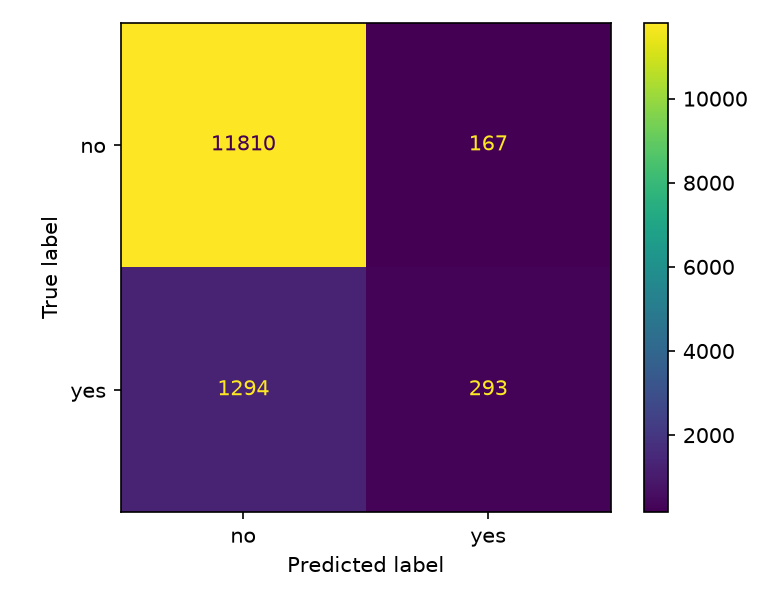
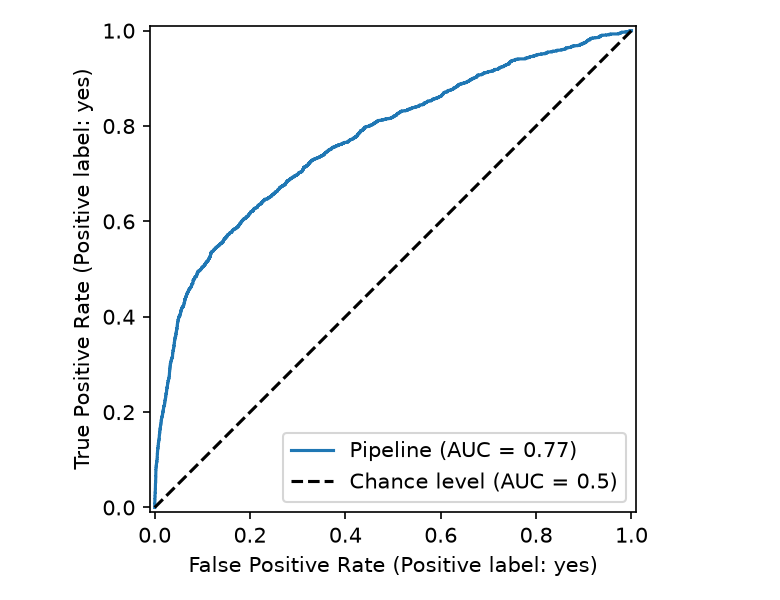
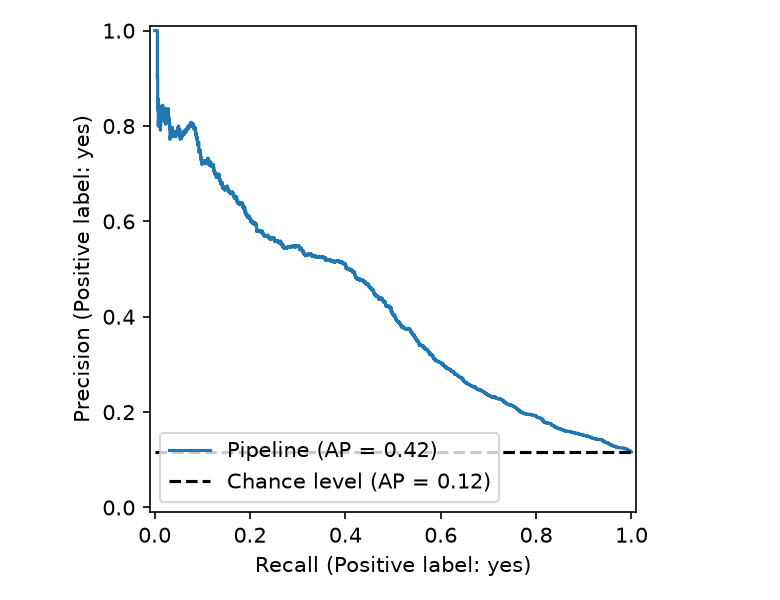
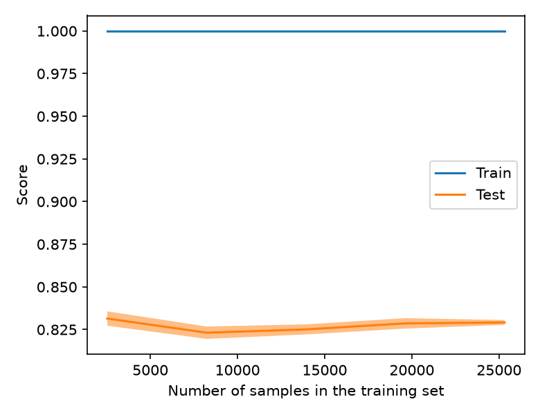

Evaluate
In the last stage, we trained our models and wrote down one score for each. In this stage, we find out what that score is hiding, check that we can trust it, and try to improve it. The evaluation stage can be broken into three core questions: What mistakes does it make? Can I trust the score? Can I improve it? The code on this page uses the names from the labs (X_train, X_test, y_train and y_test) and a model that you have already trained.
What mistakes does it make?
Count the right and wrong guesses for each answer, and turn the counts into precision, recall and F1.
Can I trust the score?
Compare the training score with the test score, and give every row a turn at being tested.
Can I improve it?
Change which mistakes the model makes, or search for better settings.
A single score tells us how often the model is right, but it hides which kind of mistake the model makes when it is wrong. The two kinds rarely cost the same, so the questions below split the score up.
First, we ask the trained model for its guess on every row of the test set. We keep the guesses in a variable, so that we can use them again in the next question.
Then confusion_matrix counts how many rows fall into each combination of what really happened and what the model guessed:
array([[11810, 167],
[ 1294, 293]])Each row of the box is what really happened, and each column is what the model guessed. Both follow the order of your answers when sorted, which for Bank Marketing is no then yes. So the bottom row is the 1,587 clients who really said yes: the model guessed "no" for 1,294 of them and found 293. On your own data, read along the row of the answer you most want to catch.
To get the same box as a picture, with the answers written on it:

If your target has more than two answers, the box has one row and one column for each. A large number away from the diagonal shows you which two answers the model mixes up.
Precision, recall and F1 are all worked out from the counts in the confusion matrix. classification_report does the sums for us, using the guesses from the question above:
precision recall f1-score support
no 0.90 0.99 0.94 11977
yes 0.64 0.18 0.29 1587
accuracy 0.89 13564
macro avg 0.77 0.59 0.61 13564
weighted avg 0.87 0.89 0.87 13564There is one row for each answer, so read the row for the answer you most want to catch. In Bank Marketing that is yes. Precision 0.64 means that 64% of the model's "yes" guesses were right. Recall 0.18 means that it found 18% of the clients who really said yes. F1 combines the two, and it stays low unless both are high. support is the number of rows with that answer in the test set.
The accuracy row is the score you get from .score(). macro avg is the plain average of the rows above it, so every answer counts equally, however rare it is.
If you see NameError: name 'guesses' is not defined, run the first code block of the question above. In your report, say which of these numbers you are using to compare your models, and why that number suits your problem.
Most models work out a chance for each answer, and guess the second answer when its chance is above 0.5. A different cut-off gives different mistakes. These two curves draw the result for every possible cut-off, so they show how well the model separates the two answers overall. First, the ROC curve:

Up the side is the share of the real "yes" rows that the model finds, which the plot calls the true positive rate (it is recall under another name). Along the bottom is the share of the real "no" rows that it wrongly calls "yes". A good model's curve climbs towards the top-left corner, and the dashed diagonal is a model that guesses at random. AUC in the legend is the area under the curve: 1.0 is a perfect model, and 0.5 is guessing.
Next, the precision-recall curve, which is the more useful of the two when one answer is rare:

Along the bottom is recall, and up the side is precision. Moving to the right, the model finds more of the "yes" rows, and more of its "yes" guesses turn out wrong. A good model's curve stays high for longer. The dashed line is a model that guesses at random, and AP in the legend is the area under the curve.
To get the AUC as a number for your results table, we take the chance of the second answer for every row:
0.772
Both plots need a target with two answers. With more than two (Dry Bean and Steel Plates), they stop with ValueError: Expected 'estimator' to be a binary classifier. For those datasets, use the classification report, and this line for one AUC number across all the answers:
If your model is an SVC, predict_proba only works when you create the model with SVC(probability=True).
A score comes from one particular test set, and a different set of rows would give a slightly different number. A model can also score well by memorising its training rows. The questions below check for both.
We score the model twice: first on the training set, and then on the test set.
0.893 0.892
In Bank Marketing, logistic regression scores 0.893 on the training set and 0.892 on the test set. The two are close, so it has not memorised. A decision tree with no limit, on the same data, scores 1.0 and 0.835, and a gap of that size is the sign of memorising (overfitting).
If you see a big gap, limit the model (for a tree, set max_depth) and score it again. In your report, give both numbers for each model.
cross_val_score cuts the training set into five parts, called folds. It trains the model on four of them, scores it on the fifth, and repeats until every part has had a turn. We give it the training set only, so that the test set stays unseen until the end.
[0.888 0.893 0.892 0.896 0.891]
There are five scores, one for each turn. We report their average, and how far they spread (the standard deviation):
0.892 0.003
In Bank Marketing, the average is 0.892 and the spread is 0.003, so the five turns agree closely. On a small dataset, your scores will spread further. If two models' averages are closer together than their spreads, the folds cannot tell you which one is better, so say that in your report.
This trains the model five times, so it takes about five times as long as fit. If your model needs scaling, pass in the whole pipeline, as we did here, so that each turn works out its scaling from its own training rows.
We name the score with scoring. 'f1_macro' is the macro average F1 from the classification report. It works whatever your answers are called, and however many there are:
[0.596 0.61 0.607 0.625 0.605]
Other names you can use are 'recall_macro', 'precision_macro' and, for a target with two answers, 'roc_auc'.
If every score comes back as nan, the score you named needs to know which answer is the one of interest, and could not tell. scoring='f1' does this when your answers are words ("yes" and "no", or "good" and "bad"), because it only works when they are 0 and 1. Use 'f1_macro' in its place.
LearningCurveDisplay trains the model on a small part of the training set, then on bigger and bigger parts, and scores each one with folds. It trains the model many times, so give it a minute on a big table.

Along the bottom is the number of rows the model was given. The "Train" line is its score on those rows, and the "Test" line is its score on the fold it did not see. This picture is a decision tree with no limit on Bank Marketing: the training line sits at 1.0, and the test line stays near 0.83 however many rows we add. A gap that never closes is memorising, and more rows will not fix it.
On your own plot, look at the right-hand edge. If the two lines have come together and levelled off, more rows would add little. If the test line is still climbing, more data would probably help.
There are two things to try: changing which mistakes the model makes, so that it catches more of the answer you care about, and changing the model's settings. Whatever you try, write down what you changed and what happened to the numbers, even when the change is small.
When one answer is much rarer than the other, a model can score well by mostly guessing the common one. class_weight='balanced' makes each mistake on the rare answer count for more while the model trains. We set it when we create the model, then train and check it as before:
precision recall f1-score support
no 0.94 0.77 0.85 11977
yes 0.27 0.64 0.38 1587
accuracy 0.76 13564
macro avg 0.61 0.71 0.62 13564
weighted avg 0.86 0.76 0.79 13564In Bank Marketing, recall for yes rises from 0.18 to 0.64, so the model now finds most of the clients who said yes. Precision falls from 0.64 to 0.27, because it says "yes" far more often, and accuracy falls from 0.89 to 0.76. Whether that is a better model depends on which mistake costs more in your problem. Compare the two reports, then say which model you would use, and why.
class_weight works in LogisticRegression, SVC, DecisionTreeClassifier and RandomForestClassifier. KNeighborsClassifier, GaussianNB and GradientBoostingClassifier do not have it, and stop with TypeError: got an unexpected keyword argument 'class_weight'. For those models, use one of the next two questions.
SMOTE makes new rows of the rare answer, each one placed between two real rows that are close together. It comes from a separate library, so we install it first. Run this once, in its own cell, then restart the kernel (Kernel, then Restart):
SMOTE must only ever see the training rows, so we put it inside a pipeline. This needs the pipeline from the new library. We give it its own name, so that it does not replace the make_pipeline you already have:
precision recall f1-score support
no 0.94 0.76 0.84 11977
yes 0.26 0.65 0.37 1587
accuracy 0.75 13564
macro avg 0.60 0.70 0.61 13564
weighted avg 0.86 0.75 0.79 13564In Bank Marketing, the result is close to class_weight: recall for yes is 0.65, and precision is 0.26. The test set is left as it was, so these scores are still for real clients.
If you see ModuleNotFoundError: No module named 'imblearn', the install has not finished, or the kernel has not been restarted since. SMOTE measures how close rows are, so scaling goes before it in the pipeline.
predict_proba gives the chance of each answer for every row, with one column for each answer in classes_. We take the second column, which in Bank Marketing is the chance of yes:
['no' 'yes'] [0.04 0.22 0.02 0.41 0.04]
With the usual cut-off of 0.5, all five of these clients are guessed "no". Next, we make our own guesses with a lower cut-off. np.where writes the first answer for every row at or above the cut-off, and the second answer for the rest.
classes_ printed them: the second one and the first one (in quotes if they are text). Then run the code below. precision recall f1-score support
no 0.93 0.93 0.93 11977
yes 0.47 0.45 0.46 1587
accuracy 0.88 13564
macro avg 0.70 0.69 0.69 13564
weighted avg 0.87 0.88 0.87 13564In Bank Marketing, a cut-off of 0.2 lifts recall for yes from 0.18 to 0.45, and precision falls from 0.64 to 0.47. Try two or three cut-offs, and write down the report for each. In your report, say which cut-off you chose and what it cost. This only works for a target with two answers.
Every model has settings that we choose before it trains, like max_depth for a tree or n_neighbors for k-NN. These are called hyperparameters. We give GridSearchCV a model and a list of values to try. It scores every value with folds of the training set, so that the test set is not used to choose.
{'max_depth': 1}
0.893best_params_ is the setting with the highest average across the folds, and best_score_ is that average. To see every setting that was tried:
param_max_depth mean_test_score std_test_score 0 1 0.893 0.002 1 3 0.892 0.002 2 5 0.892 0.002 3 10 0.890 0.003 4 None 0.829 0.001
In Bank Marketing, limits of 1, 3 and 5 are within 0.001 of each other, and no limit is far behind. After fit, grid is the model trained with the best setting, so we score it once on the test set:
0.893
To choose by a different score, add scoring='f1_macro' inside GridSearchCV( ). To try two settings at once, add a second line to settings. The grid tries every combination, so 4 values of one and 3 of the other is 12 combinations, each trained 5 times.
If your model is a pipeline, each setting's name needs the step's name and two underscores in front, for example {'kneighborsclassifier__n_neighbors': [3, 15, 25]}. The step's name is the model's name in lower case. Without it, you will see ValueError: Invalid parameter 'n_neighbors' for estimator Pipeline.
In your report, list the values you tried and the score for each one.
Start with the settings below. Each card gives the name to use in settings, what it controls, and some values to try. The names with two underscores are for models inside a pipeline with a scaler.
k-NN
'kneighborsclassifier__n_neighbors': [3, 5, 15, 25] is how many neighbours vote. More neighbours give a steadier guess.
SVM
'svc__C': [0.1, 1, 10] is how hard it tries to get every training row on the right side. A larger value follows the training rows more closely.
Logistic regression
'logisticregression__C': [0.01, 0.1, 1, 10] is how large its weights are allowed to grow. A smaller value holds them back more.
Decision tree
'max_depth': [3, 5, 10, None] is how many questions deep it can go. 'min_samples_leaf': [1, 20, 100] is the fewest rows allowed in a final box.
Random forest
'n_estimators': [100, 300] is the number of trees. 'max_depth': [5, 10, None] limits each tree.
Gradient boosting
'learning_rate': [0.05, 0.1, 0.2] is the size of each tree's step. 'n_estimators': [100, 200] is the number of trees.
Naive Bayes
GaussianNB has almost nothing to tune. If it is one of your models, say so in your report, and tune your other model.
A grid tries every combination, so it grows quickly as you add settings. RandomizedSearchCV picks combinations at random from the ranges we give it, and we choose how many it tries with n_iter. randint(1, 30) means any whole number from 1 to 29.
{'max_depth': 25, 'min_samples_leaf': 89}
0.893In Bank Marketing, 20 random combinations with 5 folds each is 100 models, and the best average is 0.893, the same as the grid found. random_state=0 makes it pick the same combinations every time, so that you can report them.